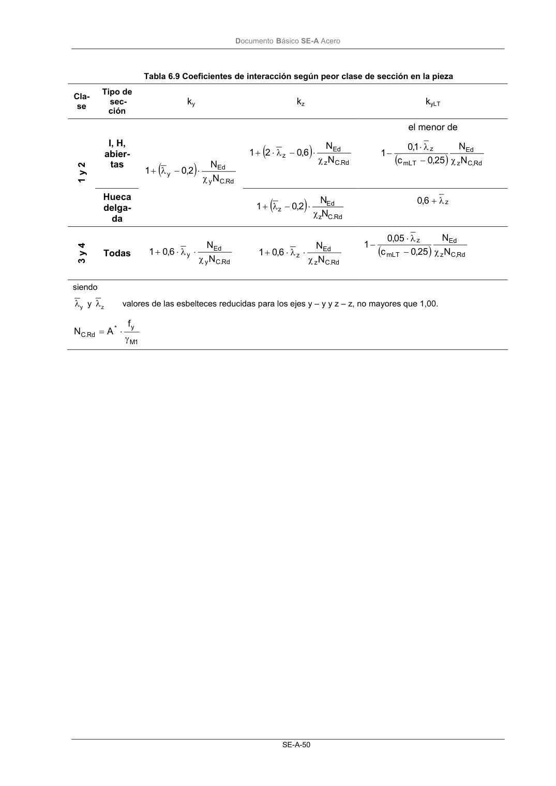

DB-SE-A · Fragmento de PDF p52 · versión 2007-10-23 · capa oficial
Formatos: JSON compacto · Markdown · PDF fuente
Ámbito del documento · texto del ámbito · documento y tablas
ID técnico a0089 · PDF pág. 52 · jerarquía no validada por persona · no es capítulo: sin_linea_de_encabezado · padre: raíz · literal original en el contenido: «( )»
( ) ) Rd . C z Ed z N N 6,0 2 1 χ ⋅ − λ ⋅ + el menor de ( ) Rd , C z Ed mLT z N N 25 ,0 c 1,0 1 χ − λ ⋅ −

PDF fuente redistribuible: copia fiel enlazada en esta página (SHA256 verificado).